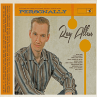

Ray Allen - Personally (Album, 2019)
01 - Divorce (3:29)
02 - Just Give Me Time (2:31)
03 - Blues Please Let Me Be (3:03)
04 - Girl-Crazy (1:40)
05 - Don't Hold Your Breath (2:09)
06 - I Feel Alright (2:16)
07 - Three Little Words (2:14)
08 - Kiss Me (1:53)
09 - Goodbye Little Baby Of Mine (2:14)
10 - Jersey Pearl (2:20)
11 - Nothing At All (2:52)
12 - I'm In Love Again (2:56)
13 - Blue Bird (2:55)
© Rhythm Bomb Records :: [5896]
Notes
Germany.
Songs are credited to or written-by M. Wauer: "Don't Hold Your Breath", "Jersey Pearl", "Blue Bird"
Songs are credited to or written-by Mathias Arnold: "Divorce", "Just Give Me Time", "Blues Please Let Me Be", "Girl-Crazy", "I Feel Alright", "Three Little Words", "Kiss Me", "Goodbye Little Baby Of Mine", "Nothing At All", "I'm In Love Again"
reference information: Discogs®
Review
030/366 (Project 366)
Ouch! Chic.... Tracks with such self-explanatory and clear titles that seem so sensible while listening to them!
Life rock ballads such as "Divorce" with so drum heartbeating and with very smooth use of various instruments such as the piano, and in fact a somewhat tragic soft Rock'N'Roll with full of sentiments, cry, loveliness. To be honest, I wonder what inspired this melody and base. Partly reminiscent of Roy Orbison in the performance of a ballad, heartfelt rock. But in a little more countrified tone. Nevertheless, an extremely fancy tune appeared then with "Just Give Me Time". Party time with so lovely female backing vocals and a slightly greasy tune. Cruisin' Rock'N'Roll. And such a mood of fruity sound continues with the next song "Blues Please Let Me Be", but more of strolling tone and rhythmic ballad. Also accompanied by the brass section, sounds as a vintage sensual Teen Pop. General old fashioned rockin' and rollin' craze returns with "Girl-Crazy". Airy-fairy Rockabilly. Sweet backing vocals. Gentle chanting. Dainty set of instruments. And such a groovy and positively sounding tune is absolutely adorable. Then "Don't Hold Your Breath" with a spectacular swinging, rocking and bouncing roll let don't hold your breath. But I am especially surprised with this boppin' raw rock of "I Feel Alright". However, songs like "Three Little Words" sound superbly delightful and are much more memorable to me. A theatrical music inspired rockin' love serenade featured male, female vocals and very dreamy backing vocals. Pleasant acoustic guitar sound, a tuny percussion and stylish arrangement. The eighth song, "Kiss Me", is a complete hit in my opinion. Very simple, very accessibly, melodic and affectionate. Voices, instruments, words. Very tuned up track. The late fifties rockin' Rockabilly sounds fine and is a great couple with "Goodbye Little Baby Of Mine"! Then wild rockin' and rollin' gem "Jersey Pearl". Shakin', groovin', movin' and twistin'. The next song, "Nothing At All", sounds no less powerful, but flavored with so much panache and a rollin' vibe. Actually, there are stunning guitars and stubborn rhythm. But "I'm In Love Again" with the album after this track. So great and so modishly sparkling. The album ends with the song "Blue Bird". And this is tearing, cutting and strolling emotions with a great support by piano. Energized, enthusiastic, cute. Restrained, dry, concise. Poetic, creative, and as the title of the album says.
A blend of the fifties, sixties, general old-fashioned style, some Country feelings and its vibe, some Honky Tonk shade, Rockabilly and Rock'n'Roll. Sometimes great Vocal Pop with a nostalgic twist! In a sense, the sound is bright and lively, sometimes with a little doleful intonation. Mostly it's all about dance tunes. And for dancing. But on the part of the artist - self-expression.
In general, I must write that the piano and sax greatly influence the perception of songs, and also set the main tone. As well as percussion. However, the main advantage and distinctive feature is the vocalist's ability, harmonies and very-very atmospheric support by womans.